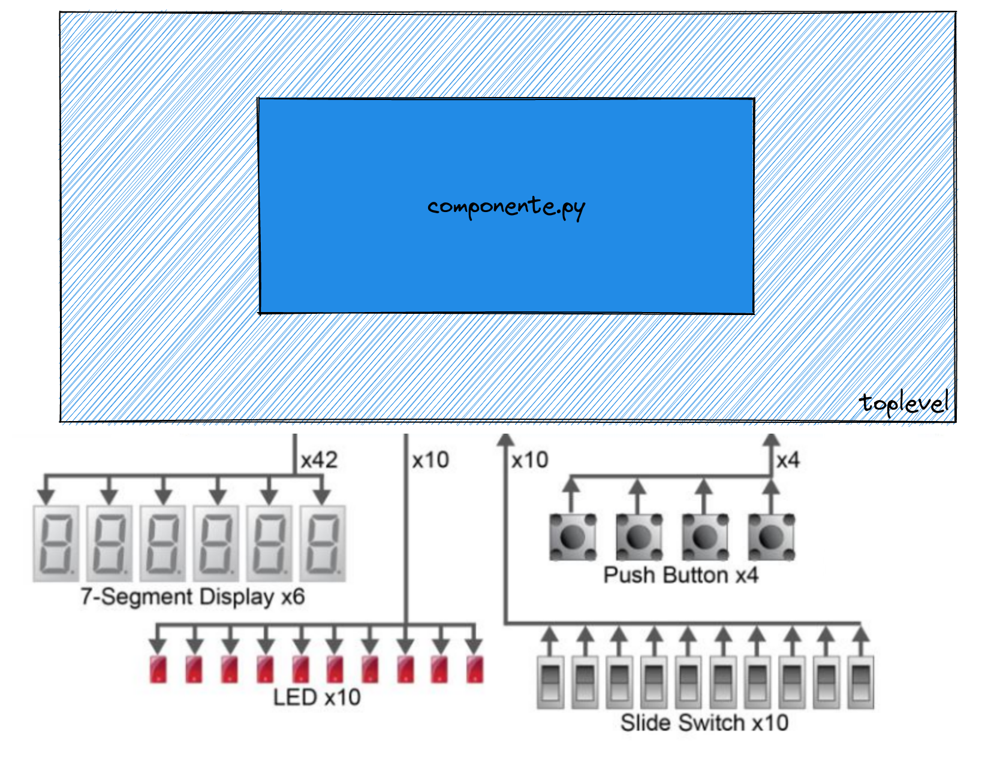

Lab 5: MyHDL
💰 Laboratório com pontos
Algumas tarefas deste laboratório fornecem pontos de nota individual (hardware ou software), os exercícios marcados com 💰 são os que fornecem os pontos. Os pontos apenas são validados quando contabilizados pelo CI do github. Fiquem atentos para o deadline da entrega.
Neste laboratório você pode receber até: (2 HW / 1 SW).
Leitura prévia necessária:
MyHDL/MyHDL Básico
Este laboratório é introdutório para o desenvolvimento do projeto (Lógica-Combinacional), onde iremos criar componentes de hardware que serão os alicerces do nosso computador. Primeiro precisamos praticar um pouco de MyHDL e entender a ferramenta e o fluxo de compilação, teste e como conseguimos executar o hardware em uma FPGA.
Os laboratórios são individuais e possuem nota (atualizado para a nova versão do curso), cada laboratório contribui com um pouco dos pontos da avaliação individual. Todos os laboratórios devem ser realizados localmente e finalizados até o término da aula.
Exercise 1
Warning
Sempre que for abrir um terminal novo e acessar a pasta, será necessário ativar o ambiente virtual:
. env/bin/activate
Configurando telemetria
Para entender melhor o comportamento de vocês ao longo dos laboratórios e atividades da disciplina, nós coletamos alguns dados de telemetria. A ideia aqui não é utilizar os dados para avaliação, mas sim para melhorias futuras. Esta técnica é muito utilizado em disciplinas da ciência da computação (inclusive devlife).
Exercise 2
pytest
Bits e Processadores utiliza uma metodologia de desenvolvimento de projeto chamada de test driven development (TDD), ou seja, para cada etapa do projeto teremos um teste associado a ele. Os testes podem ser do tipo unitário e de integraćão. Para realizarmos os testes em python utilizaremos o módulo pytest e o plugin de dev-life (para fazer o report do progresso de vocês para o servidor).
Cada exercício possui um arquivo com o prefixo test_ que excita o componente que vocês irão desenvolver e valida a saída esperada.
A seguir um exemplo do teste falhando e então solucionado e testado novamente:
Exercise 3
Info
Todo o teste executado no repositório será submetido ao servidor de dev-life para processamento futuro e acompanhamento individual da participacão de vocês nos projetos. Portanto, facam individualmente os laboratórios.
Praticando
Agora é por sua conta, você deve descrever alguns circuitos lógicos combinacionais bem simples em MyHDL.
💰 (2 HW / 1 SW) 4
Executando na FPGA
Agora vamos entender como conseguimos usar o nosso hardware descrito em MyHDL em um hardware real (FPGA), para isso temos que primeiro converter o MyHDL para VHDL e então usar a ferramenta da Intel (Quartus) para sinterizar o nosso hardware. Depois disso temos que programar a FPGA, a seguir temos uma visão simplificada do fluxo:
toplevel.py ---> toplevel.vhd ---> Makefile ---> .sof ---> FPGA
^ ^
| |
componente.py Quartus
Notem que agora o nosso módulo precisa ler e acionar pinos (interface com o mundo externo), normalmente a última camada de um projeto de hardware (aquela que realmente acessa os pinos) é chamada de toplevel. Os pinos dessa camada possuem nomes fixos, por isso temos que mapear os pinos do HW para os sinais do nosso módulo. Nessa primeira etapa iremos utilizar os seguintes componentes da nossa placa:

Onde:
LED: 10 leds que acendem com lógica1Push Buttons: 4 botões que quando apertados fornecem lógica0Slide Switchs: 10 Slides que quando acionados forcem lógica1HEX Displays: 6 displays de 7 segmentos (anodo comum)
Gerando toplevel.vhd
O programa toplevel.py faz o mapeamento do componente para os pinos da FPGA e gera o arquivo toplevel.vhd que será utilizado pelo Quartus para gerar o arquivo binário que irá ser programado na FPGA, a ideia desse módulo é mapear os sinais do componente para nomes e tamanhos fixos que serão utilizados pelo programa.
@block
def toplevel(LEDR, SW, KEY, HEX0, HEX1, HEX2, HEX3, HEX4, HEX5, CLOCK_50, RESET_N):
...
ic1 = exe4(ledr_s, SW)
...
# pinos
LEDR = Signal(intbv(0)[10:]) # (1)
SW = Signal(intbv(0)[10:])
KEY = Signal(intbv(0)[4:])
HEX0 = Signal(intbv(1)[7:])
HEX1 = Signal(intbv(1)[7:])
HEX2 = Signal(intbv(1)[7:])
HEX3 = Signal(intbv(1)[7:])
HEX4 = Signal(intbv(1)[7:])
HEX5 = Signal(intbv(1)[7:])
# instance e generate vhd
top = toplevel(LEDR, SW, KEY, HEX0, HEX1, HEX2, HEX3, HEX4, HEX5)
top.convert(hdl="VHDL") # (2)
- Vetor de tamanho 10
- Aqui indicamos para o MyHDL gerar o vhdl a partir do componente
top
Notem que os sinais criados são do tipo Signal(intbv(0)[X:]), isso indica que estamos manipulando um vetor de bits de tamanho X, no caso do LED, indicamos que o vetor é do tamanho 10, e no caso das KEY de tamanho 4. Com isso, podemos dentro do componente acessar individualmente cada um dos elementos do vetor:
@block
def exe4(led, sw):
@always_comb
def comb():
led[0].next = sw[0] and (not sw[1])
return instances()
Info
Notem que o componente recebe como argumentos os ledr_s e as chaves SW da FPGA e implementa a lógica sw[0] and (not sw[1]).
Exercise 5
Gerando .sof
O processo de gerar um hardware que posso ser executado na FPGA é complexo e até pouco tempo não existiam ferramentas opensource que fazem isso. Iremos utilizar um software da Intel chamado de Quartus que é capaz de sintetizar um hardware paras as FPGAs que a Intel possui, no nosso caso a Cyclone V. Para facilitar o desenvolvimento criamos um makefile que recebe como input a pasta do exercício e gera o sof. O projeto do quartus será o mesmo para todos os exercícios.
Tip 1
O processo é demorado para quem está acostumado a apenas programar em python, a geracão do arquivo pode demorar alguns minutos.
Exercise 6
Programando FPGA
Agora com a FPGA plugada no computador podemos programar, para isso usaremos o comando make -C quartus program que deve enviar para a ROM da FPGA o bitstream.
Exercise 7
Praticando - parte 2
Vamos praticar um pouco mais, agora usando a FPGA. Para cada um dos módulos a seguir, implemente o MyHDL e então execute na FPGA.
Exercise 8
Exercise 9
Exercise 10